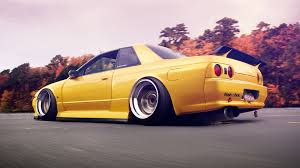
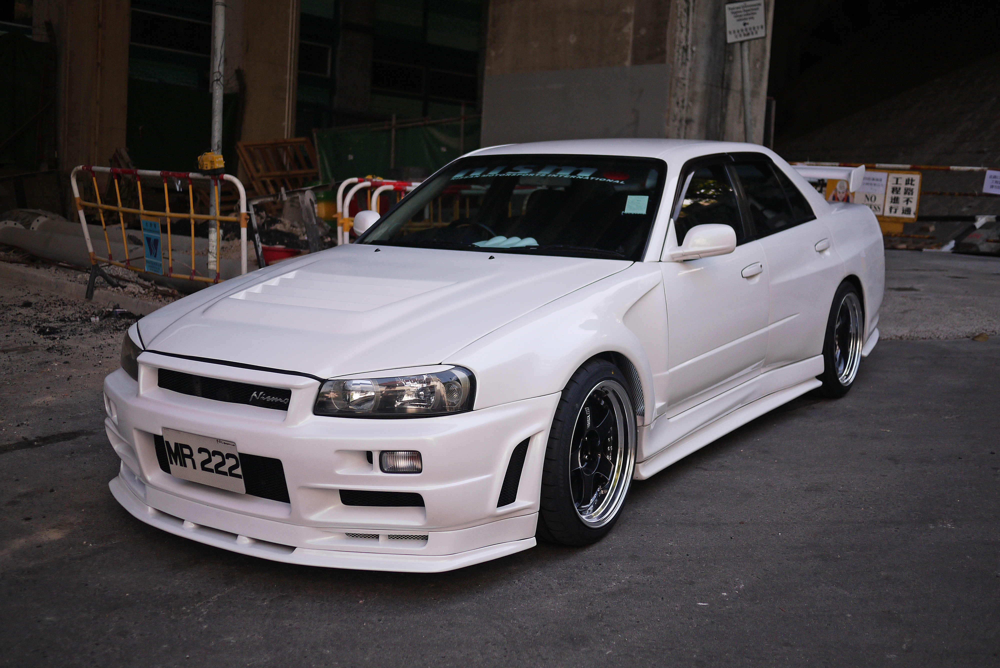

Juan Perales
Skylines r32 vs r34
pg2


The Nissan Skyline R34 GT-R was released in Japan in 1999 and is eligible for import from it's introduction date right through until the end of it's production in 2002. Again based on the Nissan Skyline R34 range, the name R34 is a common abbreviation of the chassis BNR34 and the name GT-R is short for "Grand Tourismo Racer".
This new version of the Nissan Skyline R34 GT-R had a shorter body, the front wheels were closer to the front of the vehicle and the engine valve covers were painted glossy red. This was the first GT-R to have a multifunction display LCD in the dash (substituting for the gauges on the previous GT-Rs) showing seven vehicle statistics (turbocharger pressure, throttle position, torque split, oil and water temperatures etc). The V-Spec LCD display had intake and exhaust temperatures as additional statistics. Special order Nismo LCD's included a lateral G-force meter, a lap timer and an increase in boost pressure measurement to 2 bar. Information about your trip can be downloaded to PC.
The Nissan Skyline GT-R's came with the AWD (all wheel drive) system called the ATTESA E-TS and a conventional mechanical differential, while the V-Spec models came with the ATTESA E-TS pro system and an Active LSD at the rear. V-Spec models also had firmer suspension, and lower ground clearance with a plastic front air diffuser (covering the underside of the engine), and also a rear carbon fiber air diffuser, designed to keep the air flowing smoothly under the car. The Nissan Skyline M-Spec was similar to the V-Spec but had special "ripple control" dampers and a leather interior with heated front seats.
As per the R32 & R34 GT-R predecessors, Nissan released an N1 racing model (a homologation special) sold without ABS, air conditioning, audio equipment, rear wiper or carpet in the trunk to lighten the vehicles weight. The N1 was also given the new N1 engine.
The Nissan Skyline R34 GT-R V-Spec II was released in October 2000 with increased stiffness in the suspension over the V-Spec I and had larger brake rotors on the rear. The V-Spec II also had a carbon fiber bonnet as opposed to the aluminium bonnets on the other R34 GT-R models. The V-Spec II also had a iridium center console, aluminium pedals, black cloth seats (as opposed to gray), white indicator covers. From this version onwards the standard trim level GT-Rs and V-Specs had these specifications minus the carbon fiber bonnet.
Nissan released special models in 2002 called the Nissan Skyline M-Spec, M-Spec Nür and V-Spec II Nür. The Nür was named after the famous German Nürburgring racetrack where the Skyline was developed. The Nür model featured an improved RB26DETT based on the N1 racing engine, used by Nismo in Motorsports. The Nissan Skyline V-spec II Nür is based on the regular V-spec II model, and the M-spec Nür was based on the regular M-spec model. Other than the addition of the Nür engine, the Nür models also included a different color of stitching on the interior trim, as well as a speedometer reading up to 300 km/h (186 mph).
When the line Nissan Skyline R34 production was coming to an end in 2002 Nismo designed a "Z-tune" concept which was built 2003 using a second hand 2002 Nissan Skyline V-Spec II. It was built with a concept RB26DETT 'Z1' engine. The cylinder diameter was bored out and the crankshaft was designed with a longer stroke. The engine was now a 2.8L, and produced about 600 hp (450 kW). Nismo was given approval to build 20 of the Z-tune models. The engine was revised to allow it to reach 9000 rpm (and named RB26DETT 'Z2') and the turbochargers were supplied by IHI in Japan. The engine was advertised as reaching 500 HP for warranty reasons. The Z-tune body was designed using NISMO's GT500 racing cars functional components such as engine bay bonnet vents and fenders. The Z-tune is also improved with an aggressive suspension setup from ohlins/sachs, and a specially designed Brembo brake setup.
The entire Z-tune GT-R is essentially handmade, with the car being completely stripped and re-built from the chassis up. Engineers reinforced and stiffened the chassis seam welding in key areas such as the door seams and door frames and added carbon fiber to the strut towers and transmission tunnel and the engine bay, completely redesigning the suspension, drivetrain, engine, gearbox and other components so as to work at maximum efficiency and reliability as is expected of a road-going vehicle. Only 20 units exist worldwide and is often regarded as the most expensive street legal GT-R ever built!
The Nissan Skyline R34 GT-R was released in Japan in 1999 and is eligible for import from it's introduction date right through until the end of it's production in 2002. Again based on the Nissan Skyline R34 range, the name R34 is a common abbreviation of the chassis BNR34 and the name GT-R is short for "Grand Tourismo Racer".
This new version of the Nissan Skyline R34 GT-R had a shorter body, the front wheels were closer to the front of the vehicle and the engine valve covers were painted glossy red. This was the first GT-R to have a multifunction display LCD in the dash (substituting for the gauges on the previous GT-Rs) showing seven vehicle statistics (turbocharger pressure, throttle position, torque split, oil and water temperatures etc). The V-Spec LCD display had intake and exhaust temperatures as additional statistics. Special order Nismo LCD's included a lateral G-force meter, a lap timer and an increase in boost pressure measurement to 2 bar. Information about your trip can be downloaded to PC.
The Nissan Skyline GT-R's came with the AWD (all wheel drive) system called the ATTESA E-TS and a conventional mechanical differential, while the V-Spec models came with the ATTESA E-TS pro system and an Active LSD at the rear. V-Spec models also had firmer suspension, and lower ground clearance with a plastic front air diffuser (covering the underside of the engine), and also a rear carbon fiber air diffuser, designed to keep the air flowing smoothly under the car. The Nissan Skyline M-Spec was similar to the V-Spec but had special "ripple control" dampers and a leather interior with heated front seats.
As per the R32 & R34 GT-R predecessors, Nissan released an N1 racing model (a homologation special) sold without ABS, air conditioning, audio equipment, rear wiper or carpet in the trunk to lighten the vehicles weight. The N1 was also given the new N1 engine.
The Nissan Skyline R34 GT-R V-Spec II was released in October 2000 with increased stiffness in the suspension over the V-Spec I and had larger brake rotors on the rear. The V-Spec II also had a carbon fiber bonnet as opposed to the aluminium bonnets on the other R34 GT-R models. The V-Spec II also had a iridium center console, aluminium pedals, black cloth seats (as opposed to gray), white indicator covers. From this version onwards the standard trim level GT-Rs and V-Specs had these specifications minus the carbon fiber bonnet.
Nissan released special models in 2002 called the Nissan Skyline M-Spec, M-Spec Nür and V-Spec II Nür. The Nür was named after the famous German Nürburgring racetrack where the Skyline was developed. The Nür model featured an improved RB26DETT based on the N1 racing engine, used by Nismo in Motorsports. The Nissan Skyline V-spec II Nür is based on the regular V-spec II model, and the M-spec Nür was based on the regular M-spec model. Other than the addition of the Nür engine, the Nür models also included a different color of stitching on the interior trim, as well as a speedometer reading up to 300 km/h (186 mph).
When the line Nissan Skyline R34 production was coming to an end in 2002 Nismo designed a "Z-tune" concept which was built 2003 using a second hand 2002 Nissan Skyline V-Spec II. It was built with a concept RB26DETT 'Z1' engine. The cylinder diameter was bored out and the crankshaft was designed with a longer stroke. The engine was now a 2.8L, and produced about 600 hp (450 kW). Nismo was given approval to build 20 of the Z-tune models. The engine was revised to allow it to reach 9000 rpm (and named RB26DETT 'Z2') and the turbochargers were supplied by IHI in Japan. The engine was advertised as reaching 500 HP for warranty reasons. The Z-tune body was designed using NISMO's GT500 racing cars functional components such as engine bay bonnet vents and fenders. The Z-tune is also improved with an aggressive suspension setup from ohlins/sachs, and a specially designed Brembo brake setup.
The entire Z-tune GT-R is essentially handmade, with the car being completely stripped and re-built from the chassis up. Engineers reinforced and stiffened the chassis seam welding in key areas such as the door seams and door frames and added carbon fiber to the strut towers and transmission tunnel and the engine bay, completely redesigning the suspension, drivetrain, engine, gearbox and other components so as to work at maximum efficiency and reliability as is expected of a road-going vehicle. Only 20 units exist worldwide and is often regarded as the most expensive street legal GT-R ever built!
(This information was contained at the website www.jlimports.com.au)